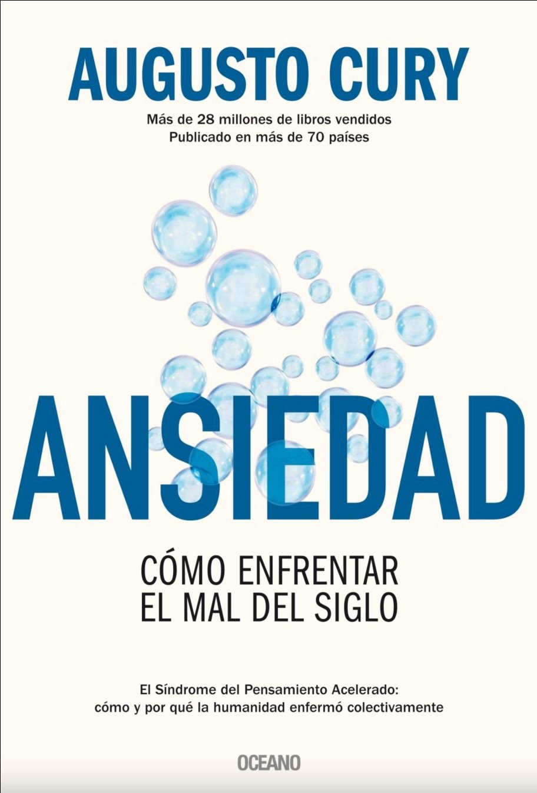
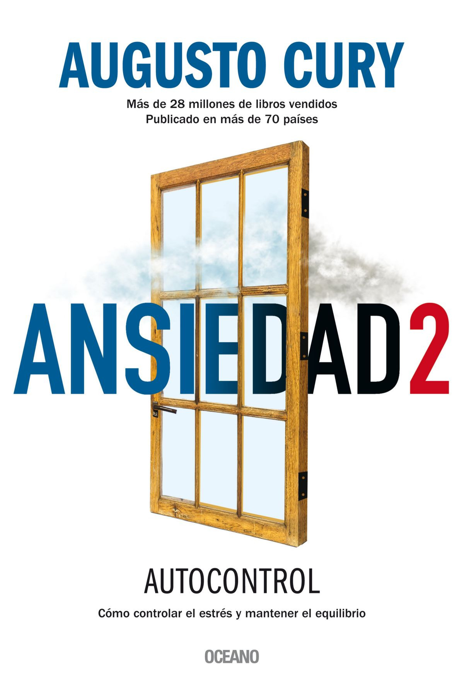
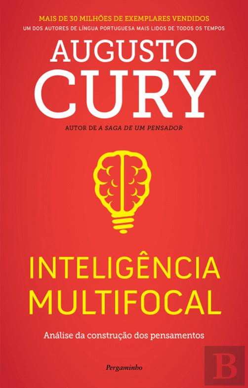
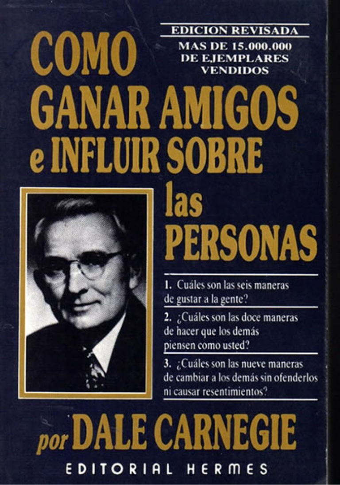
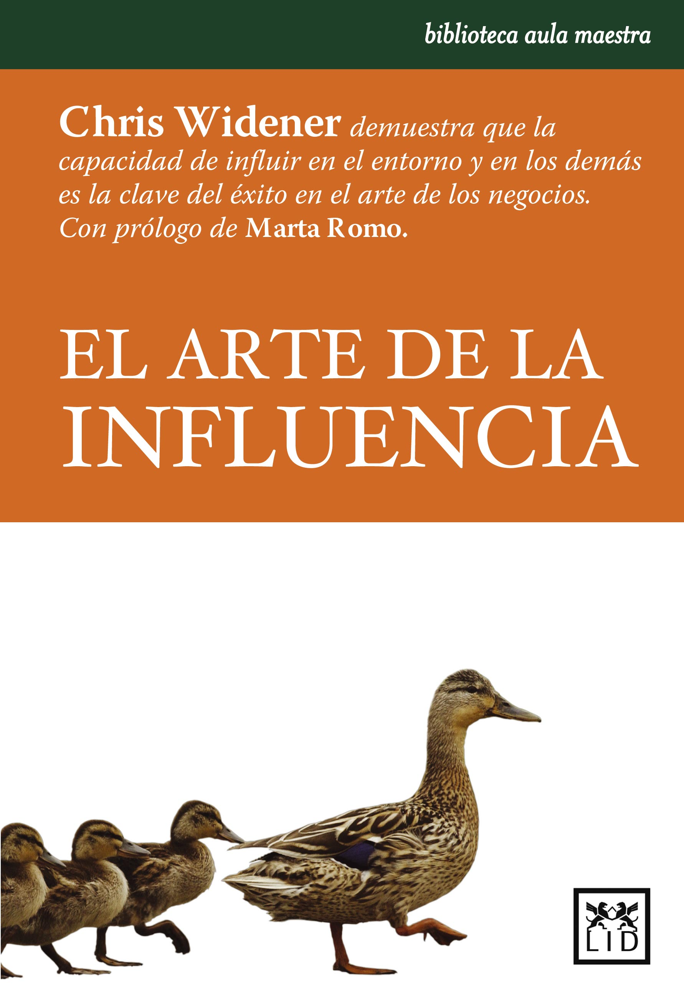
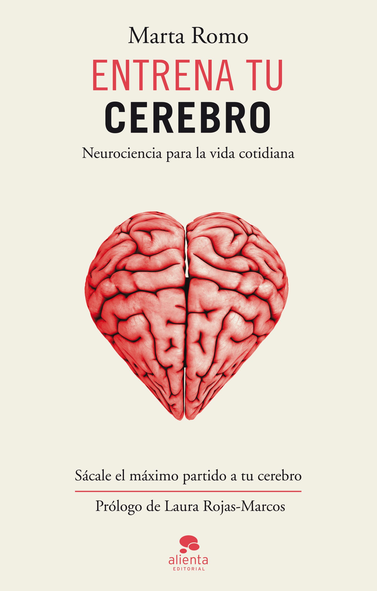

Augusto Cury
Ansiedad
¿Sufres por anticipado? ¿Siempre estás cansado? ¿Te olvidas de las cosas? ¿Padeces de insomnio e irritabilidad? Bienvenido al mal del siglo.
Niños, jóvenes, adultos, ancianos… Hoy en día, todos nos enfrentamos, en mayor o menor grado, a las trampas del pensamiento ansioso. La sobrecarga de información, la exigencia de realizar varias actividades a la vez y la acumulación de preocupaciones tienen nefastas consecuencias en nuestro bienestar físico y psicológico.
En Ansiedad, el reconocido psicoterapeuta y divulgador Augusto Cury, que se ha convertido en el autor de mayor éxito en Brasil de la última década, desentraña los síntomas y características del Síndrome del Pensamiento Acelerado (spa) y te guía para navegar en tu interior, reconocer tus fragilidades, corregir el rumbo y asumir la autoría de tu propia historia. El libro explica las raíces del extendido mal psicológico y ofrece técnicas para recuperar la tranquilidad emocional y mental y volver a experimentar plenamente el placer de la vida.

Augusto Cury
Ansiedad 2
¿Cual es la diferencia entre estres y aniedad? ¿cuales son las consecuencias de la falta de control del estres? ¿como saber si tenemos ansiedad saludable o enfermiza? y ¿ como gestionamos el estres y la ansiedad?
Con bases en sus experiensias autobiograficas y en investigaciones sobre la inteligencia emocional,el psiquiatra Augusto Curyhaceuna propuesta de valiosas herramientas emocionales para la administracion del estres y la ansiedad.

Augusto Cury
Inteligencia Multifocal
teoria revolucionaria sobre el funcinamiento de la mente; capaz de causar grandes impactos en la ciencia. Estimulando la formacion del hombre como pensador e ingeniero de ideas. Esta teoría tiene cinco grandes áreas de estudio. La primera es la construcción del "yo" como autor de nuestra propia historia. La segunda son los papeles conscientes e inconscientes de la memoria. La tercera, la transformación y la educación de la emoción. La cuarta, que es la última frontera de la ciencia, son los procesos de construcción del pensamiento. Y la quinta, los de formación de pensadores. Es una teoría que desarrolla múltiples herramientas para prevenir trastornos psíquicos, la tiranía de la belleza, la anorexia, la bulimia, los miedos, la baja autoestima, la timidez e, incluso, la depresión y las enfermedades psicosomáticas.

Dale Carnige
Como ganar amigos
Convertido en un clásico de las relaciones humanas, los sólidos principios enunciados en Cómo ganar amigos no han sido aún superados. Aplicando su gran conocimiento de las personas, dotes de observación y experiencia profesional. Carnegie consiguió crear un tratado de psicología cotidiana que es el origen del marketing moderno. Con más de 15 millones de ejemplares vendidos, Cómo ganar amigos ha ayudado a miles de personas a alcanzar el éxito en su vida personal y profesional.

Chris Widener
Arte de la influencia
Chris Widener recoge las reglas de oro de El arte de la influencia mediante la historia de Marcus Drake. El relato arranca en la celebración de su graduación, cuando su abuela le regala cinco días con uno de los multimillonarios más famosos de América: Bobby Gold, “parecía poseer una varita mágica para conseguir lo aparentemente imposible”. Durante aquellos días, Bobby Gold se sirvió de sus experiencias y de sus contactos para enseñar a Markus las cuatro reglas de oro de la influencia: la integridad; conservar la influencia; anteponer los intereses de los demás a los de uno mismo y la perfección.

Marta Romo
Entrena tu cerebro
La neuroplasticidad nos da esperanzas frente a las dificultades del día a día, frente al sufrimiento e incluso frente a las enfermedades degenerativas. Ahora puedes entrenar tu cerebro para lograr una mejor versión de ti mismo. Con este libro descubrirás los elementos que pueden ayudar a tu cerebro a conseguir el alto rendimiento que buscas. Se trata de pequeñas y sencillas claves para incluir en tu día a día relacionadas con las emociones, la conexión social, el juego, la meditación, el ejercicio físico, el sueño, la alimentación e incluso la actividad de no hacer nada. Marta Romo te propone que te entrevistes con tu cerebro para conocer sus preferencias, sus gustos, sus aficiones, sus necesidades… en definitiva, para ser más eficiente y vivir mucho mejor.